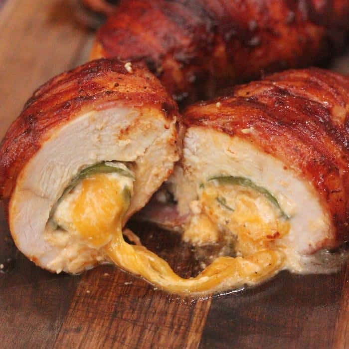

Jalapeno Popper Stuffed bacon wrapped Chicken

Ingredients
- Large chicken Breast
- 1 pack of bacon, I use oscar meyer center cut.
- One pack of whipped cream cheese, I use whipped because it is easier to mix.
- One pack of mexican blend shredded cheese, or ghost pepper shredded cheese if you like it hot!
- One Jalapeno for every chicken breast you plan on cooking, make sure they are plump.
- Salt and pepper
Recipe
- This recipe is for 6 chicken breasts, adjust accordingly
- Prepare 8 oz cream cheese and 1 cup of shredded cheese. Mix in bowl
- Filet jalapenos to remove stem and seeds and clear space for filling
- Add cream cheese filling to jalapenos and press them back together
- Prepare 6 Chicken breast by fileting them and leaving them open.
- Put Poppers inside of fileted chicken breasts and close them up.
- Next wrap the entire chicken breast in bacon, being careful not to over lap so the bacon cooks evenly
- Cook at 400 to an internal temperature of 165 degrees F
- Let rest for five minutes before enjoying!